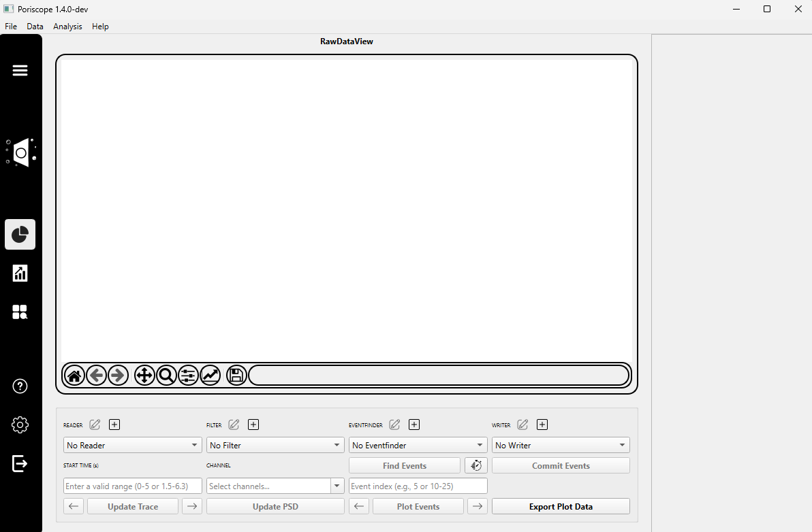

Raw Data Tab¶
The Raw Data Tab allows users to load raw current traces from nanopore experiments, apply filters before analysis, determine the baseline, and detect events.
Step 1: Loading Your Data¶
Click the ➕ Add Reader button to load a data file.
A dropdown menu will appear listing supported reader types. These correspond to different file formats and decoding standards. Supported readers include:
ABF2Reader(for .abf files)BinaryReader1XandSingleBinaryDecoder(for .bin-like formats)ChimeraReader20240101,ChimeraReader20240501,ChimeraReaderVC100(for Chimera system .log files or variations)
Note
Make sure the reader you choose matches your file type, otherwise loading will fail.
A plugin settings dialog will prompt you to:
Enter a name for the reader instance (e.g.,
ABF2Reader_1).Select the input file using the Select Input File button.
After loading the file, select a channel from the Channel dropdown menu.
In the Start Time field, enter a valid range (e.g.,
0or5.2).Click the Update Trace button to visualize the raw signal.
(Optional) To analyze noise across frequencies, click the Update PSD button.
Step 2: Applying a Filter¶
Click the ➕ Add Filter button to apply a preprocessing filter.
A dropdown will appear listing available filters:
BesselFilter– features a smooth response to signal transients, ideal for reducing high-frequency noise.WaveletFilter– preserves pulse shape and SNR while denoising using a wavelet transform.
A plugin settings dialog will appear, depending on the selected filter:
For ``BesselFilter``:
Name: Identifier for the filter instance (e.g.,BesselFilter_1).Cutoff(Hz): Frequency above which signals are attenuated.Samplerate(Hz): Sampling rate of the signal.Poles: Number of poles in the filter; higher values give a steeper roll-off.
For ``WaveletFilter``:
Name: Identifier for the filter instance (e.g.,WaveletFilter_1).Wavelet: Selectable wavelet basis (e.g.,bior1.5,db4, etc.).
Note
Filters help improve event detection by removing baseline drift or noise. Choose the one that best suits your data characteristics.
After configuration, confirm by clicking OK.
(Optional) Adjust the Time Range using the ⏱ Timer button to limit the region of interest.
Step 3: Finding Events¶
Click the ➕ Add Event Finder button to load an event detection algorithm.
A dropdown will appear listing available event finders:
ClassicBlockageFinder— detects events based on a current threshold.BoundedBlockageFinder— detects events constrained within user-defined amplitude and baseline bounds.
Note
Choose the event finder based on the expected characteristics of your signal. Both plugins share common parameters but differ in flexibility.
A settings window will appear with the following configurable parameters:
Shared Parameters:
Threshold(pA): The current level below which an event is considered a blockage.Min Duration(µs): Minimum allowed duration for an event.Max Duration(µs): Maximum allowed duration for an event.Min Separation(µs): Minimum time between consecutive events to treat them as distinct.
BoundedBlockageFinder-only:
Min Baseline/Max Baseline(pA): Optional baseline current boundaries that must enclose the pre-event region.
Note
For ClassicBlockageFinder, only a fixed threshold is required. For BoundedBlockageFinder, both threshold and optional baseline limits are used to fine-tune detection.
Click the Find Events button to run the detection process.
(Optional) Adjust the Time Range using the ⏱ Timer button to limit the detection to specific intervals.
Note
A range like 0-0 means “start to end” of the loaded signal. You can also specify ranges such as 0-4, 6-7, or even wrap-around intervals like 9-0.
Once events are detected (you will see confirmation in the right-hand panel), enter the event indices you wish to inspect.
Click the Plot Events button to visualize those events.
Use the ◀ and ▶ arrows to browse between plotted events.
Step 4: Writing Events¶
Click the ➕ Add Writer button to select a module for saving your detected events.
A configuration dialog will appear. If you’re using
SQLiteEventWriter, you’ll be prompted to fill in the following fields:Output File: Path where the SQLite .db file will be saved.Experiment Name: A short label to identify this experiment in the database.Voltage(mV): The applied transmembrane potential during the experiment.Membrane Thickness(nm): Thickness of the nanopore membrane.Conductivity(S/m): Conductivity of the solution during the experiment.
Note
The results generated during the eventfinding process are stored in a SQLite database, allowing for efficient access, export, and integration with downstream tools.
After confirming the settings, click the Commit Events button to write the selected events to the database.
(Optional) You can click the Export Plot Data button at any time to save the current graph as a .csv, .json, or other supported format.